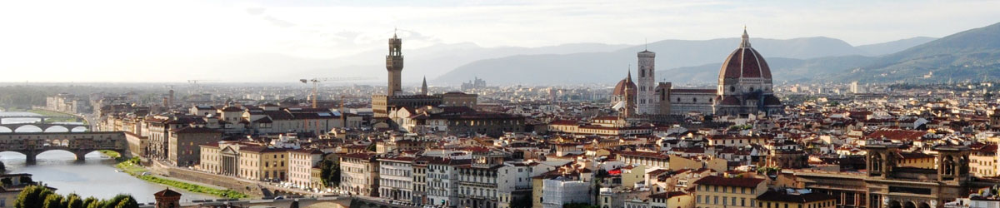

|  |
| Home The City Local Facts Travel Blogs Photo Gallery |
Study Abroad - Florence, ItalyWhat's great about this city? Florence is an artists' haven. This small city has preserved the essence of the Renaissance and gives the impression of living in an outdoor museum. This city stands out as a cultural, historical, and academic hot spot in Italy. Perfect for... First-time travelers, art lovers and people who prefer a smaller city that's easy to navigate. With a population of roughly 380,000 people, Florence maintains a small-town feel allowing you to walk to any major area or monument within thirty minutes. Students will have the opportunity to find out what life in Florence is really like while taking in some of the world's greatest art - close to 25% of the worlds greatest masterpieces are behind the walls of the Uffizi Gallery, the Accademia and the Bargello museums. Check out some reasons why studying abroad in Itlay is the best! Learn about local secrets, the best places to go, and why you'll never want to leave Italy!Top 10 Reasons to Study Abroad in Flornece13 Things You Learn Studying Abroad in Italy29 Secrets Students Studying Abroad in Europe Won't Tell You39 Reasons Studying Abroad in Italy Ruins You For Life |
Reference Links |